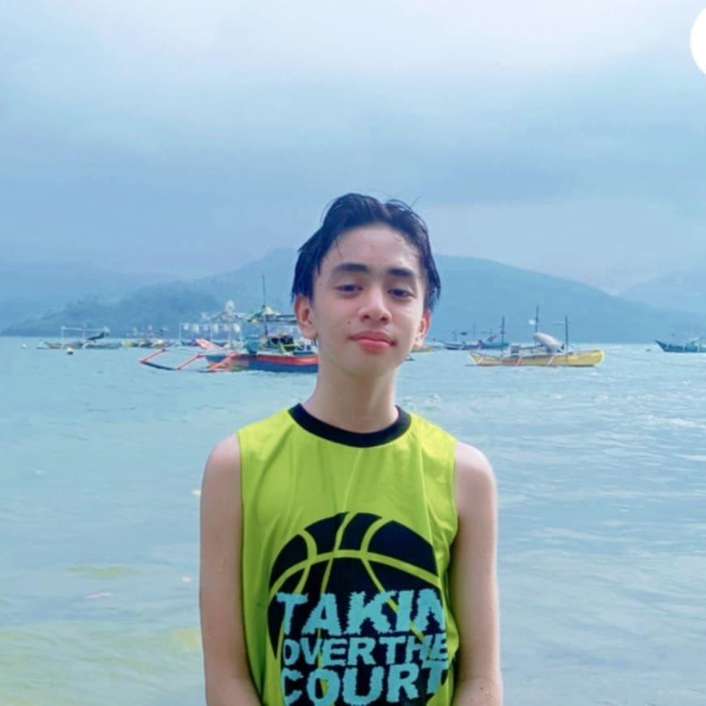

Michael Trampe – COO and Co-Founder of Aerial Journey
Strategist. Problem-Solver. Traveler at Heart.
Michael Trampe has always been a behind-the-scenes powerhouse. As the Chief Operating Officer and co-founder of Aerial Journey, Michael is the architect of the agency's operational success, ensuring that every flight, booking, and experience meets the highest standards.
The Early Days
Hailing from Manila, Michael grew up in a family of entrepreneurs, where he learned the art of business at an early age. His career started in logistics, where he quickly rose through the ranks, earning a reputation as a detail-oriented problem-solver.
Michael first crossed paths with Jerian Morales at a travel conference in 1994. The two struck up a conversation that turned into hours of brainstorming. Jerian's passion for connecting the Philippines to the world resonated with Michael, and he offered to bring his logistical expertise to the table. Together, they built Aerial Journey from the ground up.
The Engineer of Excellence
Michael's operational mindset has transformed Aerial Journey into a finely tuned machine. From integrating cutting-edge technology into booking systems to streamlining workflows across multiple branches, Michael has ensured that Aerial Journey operates at peak efficiency. Despite his role behind the scenes, Michael's influence is felt everywhere. He is the driving force behind the agency's expansion into five international markets, and his commitment to customer satisfaction has set new benchmarks for the travel industry.
Beyond the Office
When he's not working, Michael is an avid traveler who loves exploring off-the-beaten-path destinations. His personal philosophy—"Every detail matters"—applies both to his work and his adventures. He is also a mentor to young entrepreneurs, regularly hosting workshops on business operations and logistics.